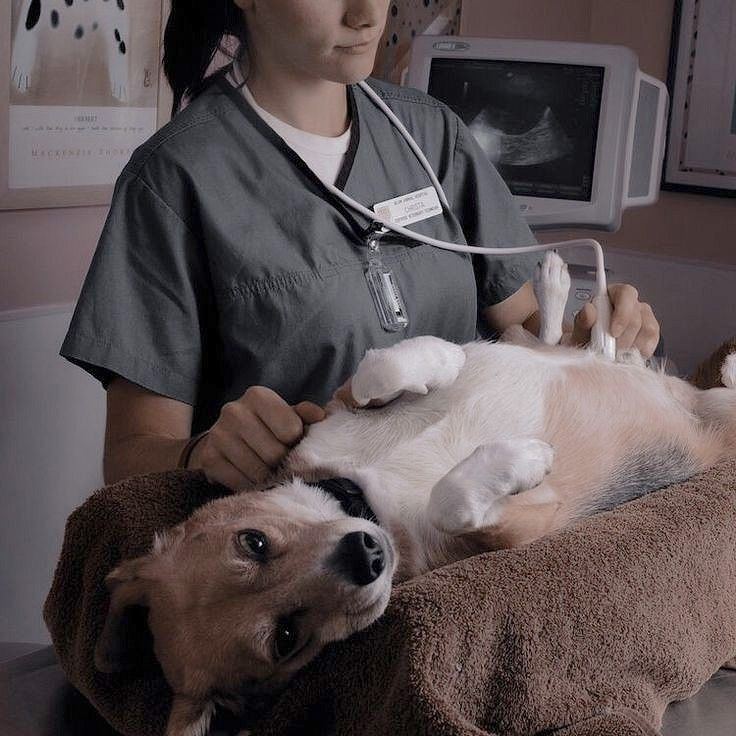

3 Consultorios de atención simultáneas para revisiones generales, diagnóstico y controles

Consultas y vacunación a domicilio, el mismo servicio con la comodidad de no trasladar a la mascota hacia nuestra clínica

Electrocardiograma, interconsultas con Médicos Veterinarios especialistas en Cardiología Servicio de odontología, limpieza de dientes por ultrasonido.